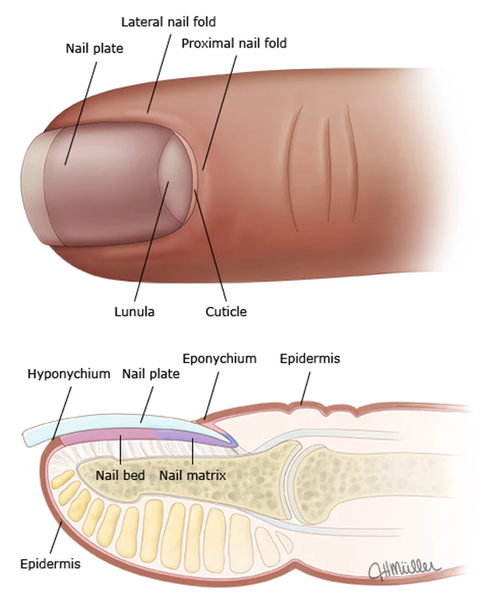

Dermatologia
Dra. Adriana Matter
Especialista em doenças e cirurgias das unhas, tricologia (cabelos), dermatologia clínica e estética.
CRM 33971 · RQE 26962
Dra. Adriana Matter
Dermatologista em Curitiba, a Dra. Adriana Matter dedica-se ao diagnóstico e ao tratamento das doenças das unhas e dos cabelos — do cuidado clínico à cirurgia.
Cada avaliação vai além dos sinais e sintomas: considera o estilo de vida, os fatores ambientais, as doenças associadas e o histórico familiar de cada paciente, para direcionar o tratamento mais adequado.
No Instituto Multicare, no Batel, atende também dermatologia clínica, cirúrgica e estética, com procedimentos realizados no próprio consultório.
CRM 33971 · RQE 26962
Formação e títulos
- Graduação em Medicina Universidade Federal do Paraná (UFPR)
- Residência em Dermatologia Hospital do Servidor Público Municipal de São Paulo (HSPM)
- Título de especialista em Dermatologia Sociedade Brasileira de Dermatologia (SBD)
- Especialização em Tricologia Universidade de Mogi das Cruzes
- Especialização em Onicopatias e cirurgia do aparelho ungueal Hospital do Servidor Público Municipal de São Paulo (HSPM)
- Preceptora de Residência Médica Ambulatório de doenças ungueais, Santa Casa de Curitiba
- Preceptora de Residência Médica Ambulatório de doenças ungueais, Hospital de Dermatologia Sanitária do Paraná (Piraquara/PR)
Doenças e cirurgias das unhas
As unhas são anexos da pele — e, por isso, parte do cuidado do médico dermatologista. Suas alterações podem ser fisiológicas ou indicar doenças, influenciadas tanto pelo ambiente externo quanto por desequilíbrios do organismo, como carência de nutrientes e alterações hormonais.
A avaliação é completa, do exame das unhas à investigação das causas, para definir o melhor caminho de tratamento em cada caso.

- Onicomicose (micose das unhas)
- Unha encravada
- Hipercurvatura ungueal
- Doenças inflamatórias das unhas
- Infecções nas unhas
- Tumores nas unhas
Quando há indicação, o tratamento cirúrgico é realizado pela própria Dra. Adriana — como em casos de tumores ungueais —, garantindo a continuidade do cuidado, da primeira consulta ao pós-operatório.
Cabelos, pele e estética
Toque em cada área para ver as condições e os procedimentos.
Cabelos (tricoses)
A saúde dos cabelos reflete o equilíbrio do organismo. O diagnóstico considera fatores ambientais, nutrição, alterações hormonais e histórico familiar para definir o tratamento de cada tipo de queda ou alteração capilar.
- Alopecia androgenética (calvície)
- Eflúvio telógeno
- Alopecia areata
- Alopecias cicatriciais
- Mesoterapia capilar
- Microagulhamento
- MMP capilar
Dermatologia clínica e cirúrgica
Diagnóstico, prevenção e tratamento das condições da pele, com soluções clínicas e procedimentos cirúrgicos realizados em consultório.
- Acne
- Psoríase
- Dermatites
- Vitiligo
- Rosácea
- Melasma
- Urticária
- Hiperidrose, entre outras
- Biópsia de pele
- Crioterapia
- Eletrocauterização
- Exérese de lesões
- Correção de lóbulo de orelha
Estética e laser
Procedimentos estéticos personalizados, apoiados no conhecimento da anatomia da face — para manter e melhorar a aparência com naturalidade e segurança.
- Toxina botulínica
- Preenchimento facial
- Bioestimuladores de colágeno
- Terapia de indução de colágeno
- Ultrassom microfocado
- Laser fracionado
- Luz intensa pulsada
- Peelings químicos
- Tratamento de papada
- MMP facial
Agende sua avaliação
Atendimento individualizado com a Dra. Adriana Matter, no Instituto Multicare, no Batel.
Agendar pelo WhatsApp